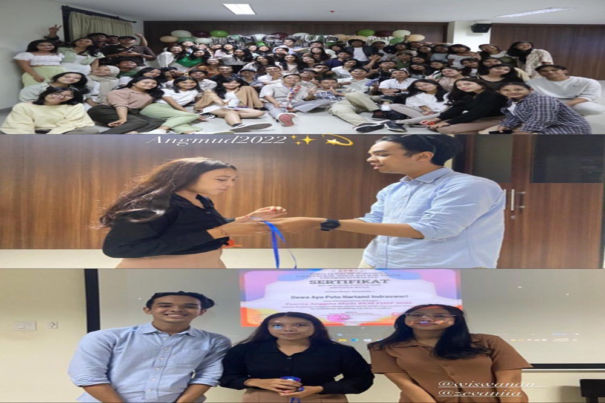

Kegiatan Anggota Muda BEM FISIP UDAYANA "ANGMUD"Pada semester 1 saya mengikuti kegiatan Anggota Muda BEM FISIP, mengikuti organisasi ini dapat lebih akrab antara kakak tingkat maupun menambah teman di berbagai prodi yang ada di FISIP Udayana, organisasi ANGMUD ini untuk menyeleksi ke tahap selanjutnya yaitu BEM, mahasiswa tidak dapat langsung bergabung Badan Eksekutif Mahasiswa (BEM) maka dari itu dibentuk lah sebuah wadah yang dinamai Anggota Muda sebagai tempat bagi mahasiswa baru untuk mempelajari organisasi di perkuliahan pada tahun pertama. Saya mengikuti ANGMUD pada tahun 2022. Kegiatan HIMPUS (Himpunan Mahasiswa D3 Perpustakaan) "LISI"Library Science Initation atau yang disingkat menjadi LISI merupakan Ospek prodi bagi mahasiswa baru D3 Perpustakaan yang rutin dilaksanakan satu tahun sekali. Dengan mengikuti kegiatan LISI merupakan salah satu syarat kelulusan. Pada tahun 2022 saya sebagai peserta LISI yang dimana mengikuti rangkaian kegiatan mulai dari pengumpulan pertama hingga pengumpulan ketiga dan setelah mengikuti pengumpulan kegiatan di Hari H yang dilaksanakan pada tanggal 26 dan 27 Desember 2022 dilaksanakan di Alam Tirta Outbound, Carangsari, Kecamatan Petang, Kabupaten Badung Bali. Kegiatan Musyawarah Mahasiswa (MUSMA) HIMPUSKegiatan Musyawarah Mahasiswa ini yaitu kegiatan Mahasiswa D3 Perpustakaan program kerja tetap yang dilakukan setiap setahun sekali. Yang dimana proker ini dilakukan di Ruangan D3 lantai 3 FISIP Sudirman yang dilaksanakan pada Sabtu, 23 Maret 2024. Program kerja di miliki oleh Bidang 5 HIMPUS yaitu Advokasi dan Kesejahteraan Mahasiswa (ADKESMA) Kegiatan Seminar Nasional (SEMNAS)Kegiatan Seminar Nasional yang merupakan program kerja tetap Himpunan Mahasiswa D3 Perpustakaan dilaksanakan setiap setahun sekali yang dimiliki oleh Bidang 1 Kompetisi Penelitian Dan Pengabdian Masyarakat Himpus, kegiatan semnas ini dilaksanakan pada tanggal 20 April 2024 di Lantai IV Kampus FISIP Sudirman. Dalam Kegiatan SEMNAS ini saya sebagai sie PPD yaitu tugasnya mendokumentasikan selama kegiatan berlangsung. Kegiatan Bonding HIMPUSKegiatan Bonding HIMPUS ini merupakan program kerja unggulan dari Kabinet Selaras Cita yang dilaksanakan 3 bulan sekali yang dilakukan oleh 2 angkatan. Tujuan dari kegiatan bonding ini dilakukan untuk mengakrabkan antara adik tingkat dan kakak tingkat dan untuk membahas kendala- kendala yang dihadapi selama proker yang sudah berjalan, maupun membahas proker selanjutnya. |  |
|
© 2024 By Dwayu Hartami Contact: Email: dwayuhartami124@gmail.com Social Media: Instagram |
|